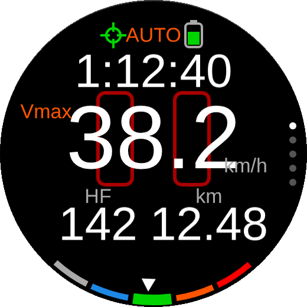
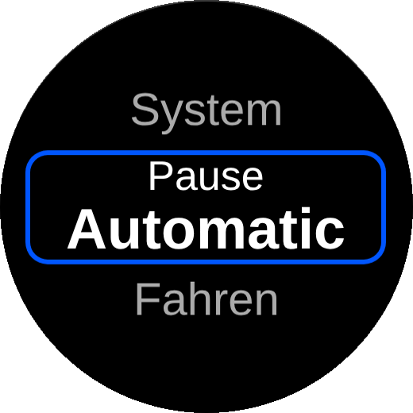

Auswahl mit blauem Rahmen, Nachbarn grau.

Beide Sportarten stehen immer zur Wahl.
Bedienungsanleitung · Garmin Connect IQ · Windsurfen und Wingen
Anleitungsrevision V4 · SurfsApp 0.24.13 · Stand: 20.11.2026
SurfsApp zeichnet Windsurf- und Wingfoil-Sessions auf und zeigt dabei Geschwindigkeit, Herzfrequenz, Strecke und sportartspezifische Kennzahlen. Die Aufnahme wird als Aktivität in Garmin Connect gespeichert. Die App erkennt Gleiten, Halsen und Wenden, beim Windsurfen zusätzlich Wellenritte und Loops.
Die Darstellungen in dieser Anleitung sind schematisch. Die Zahlenwerte sind Beispiele.
| Bedienelement | Funktion |
|---|---|
| START/STOP | Auswählen, bestätigen, Aufnahme starten. Während der Aufnahme: Aktionsmenü öffnen. |
| HOCH / RUNTER | In Listen auswählen, Werte ändern, während der Aufnahme Seiten blättern. |
| HOCH lang gedrückt | Einstellungen öffnen, auch während der Aufnahme. Auf der Loop-Seite öffnet es direkt „Letzte Sprünge“. |
| BACK | Eine Ebene zurück. Auf der Startseite beendet es die App. Während der Aufnahme setzt es einen Marker. |
| Touchscreen | Wird nicht ausgewertet. Wassertropfen lösen nichts aus. |
| Bedienelement | Funktion |
|---|---|
| Obere Taste | Auswählen, bestätigen, Aufnahme starten. Während der Aufnahme: Aktionsmenü öffnen. |
| Untere Taste | Eine Ebene zurück, auf der Startseite App beenden. Während der Aufnahme: Marker setzen. |
| Wischen nach oben / unten | Blättern in Listen und Seiten, auch während der Aufnahme. |
| Wischen nach links / rechts | Seiten blättern, nur während der Aufnahme und in der Pause (links = weiter, rechts = zurück). |
| Tippen | Ohne Funktion. Ausgewählt wird immer mit der oberen Taste. |
| Langer Druck auf den Bildschirm | Ohne Funktion. Die Einstellungen stehen als eigener Eintrag „Einstellungen“ auf der Startseite und im Aktionsmenü. |
Während einer laufenden Aufnahme ist der Bildschirm gesperrt, nur Wischen zum Blättern der Seiten ist möglich. In der Sportwahl, in der Vorschau und in einer manuell gesetzten Pause ist er frei.
Ein blauer Rahmen markiert den gewählten Eintrag. Blaue Pfeile zeigen an, dass die Liste in diese Richtung weitergeht. Eine Liste läuft im Kreis: Nach dem letzten Eintrag folgt wieder der erste.
Mit HOCH und RUNTER wählen Sie die Sportart Windsurfen oder Wingen. Steht eine gespeicherte Session bereit, erscheint zusätzlich „Letzte Session“. Auf der vívoactive 4 folgt außerdem „Einstellungen“.
Zeichnet die Uhr nur begrenzt Daten auf, weil der Speicher knapp ist, erscheint in der Vorschau kurz ein Hinweis zur möglichen Aufnahmedauer. Eine Taste schließt ihn.
START/STOP öffnet während der Aufnahme das Aktionsmenü:
Jede Aktion verlangt eine Bestätigung mit „Ja“ oder „Nein“. HOCH und RUNTER wechseln die Auswahl, START bestätigt. Bei „Speichern“ und „Verwerfen“ steht „Nein“ vorgewählt.
Die Pause kann von Hand oder automatisch ausgelöst werden (Einstellung „Pause“). Bei „Automatic“ hält die Aufnahme an, wenn die Geschwindigkeit längere Zeit unter dem Pausenwert liegt, und läuft weiter, sobald die Fahrt-ab-Geschwindigkeit überschritten wird. Auf der Hauptseite zeigt „AUTO“ eine automatische Pause an, bei manueller Pause das Pausezeichen.
Ist Marker eingeschaltet, setzt BACK während der Aufnahme einen Marker. Die Uhr bestätigt mit zwei kurzen Vibrationen. Zwei Marker müssen mindestens zwei Sekunden auseinander liegen. In der Pause setzt BACK keinen Marker. Mehr dazu in Abschnitt 9.
Auf jeder Seite der Aufnahme zeigt die Kopfzeile links den GPS-Empfang, rechts den Akku und in der Mitte den Zustand der Aufnahme:
| Anzeige in der Mitte | Bedeutung |
|---|---|
| Roter Punkt | Die Aufnahme läuft. |
| Roter Punkt mit blauem Ring und einer Zahl daneben | Die Aufnahme läuft, und diese Zahl an Sprung- oder Turn-Datenpaketen wartet noch darauf, in die Aktivität geschrieben zu werden. Dafür muss Loop „Ein Visu“ oder „Lernen“ oder Wellenritt „Visu“ gewählt sein. Die Zahl sinkt, wenn die Daten geschrieben werden. |
| Gelbe Zahl mit „s“ | Sie haben „Speichern“ gewählt, und die Uhr schreibt noch Sprungdaten. Die Zahl ist die Restzeit in Sekunden, siehe unten. |
| Blaues Quadrat | Der Speicher der Uhr für diese Aufnahme ist voll. Die Uhr speichert gleich und beginnt einen neuen Teil, siehe unten. |
| Pausezeichen oder „AUTO“ | Die Aufnahme ist angehalten, von Hand oder automatisch. |
Wenn Sie „Speichern“ bestätigen, wartet die Uhr zuerst, bis alle noch ausstehenden Sprungdaten in der Aktivität stehen. In dieser Zeit läuft die Aufnahme weiter, die Uhr vibriert einmal zu Beginn, und die Restzeit steht auf jeder Seite:
Danach speichert die Uhr von selbst und zeigt die Auswertung. Die Wartezeit ist höchstens vier Minuten lang. Wollen Sie nicht warten, wählen Sie „Speichern“ noch einmal: Dann speichert die Uhr sofort, und Sprungdaten, die noch nicht geschrieben waren, fehlen in der Aktivität. In der Pause und bei leerem Akku wird immer sofort gespeichert.
Die Uhr hat für jede Aufnahme nur begrenzt Platz für die Sekundenwerte. Reicht er auf Ihrer Uhr nur für eine kürzere Aufnahme als üblich, erscheint nach dem Start der Aufnahme fünf Sekunden lang ein Hinweis mit der möglichen Dauer, zum Beispiel „Speicher für 1:20 h, dann neuer Teil“. START schließt ihn sofort.
Ist der Speicher während der Aufnahme voll, geht es so weiter:
In Garmin Connect erscheinen die Teile als getrennte Aktivitäten. Die Auswertung nach dem Speichern gibt es erst nach dem letzten Teil.
Manchmal beendet die Uhr die App mitten in der Aufnahme, zum Beispiel wenn Sie aus der Aufnahme heraus Nachrichten oder den Kompass der Uhr öffnen. Starten Sie die App innerhalb von zehn Minuten wieder, setzt sie die Aufnahme sofort fort: Es beginnt ein neuer Teil, und fünf Sekunden lang steht auf der Hauptseite „FORTGESETZT“. Auch hier bestehen die beiden Teile in Garmin Connect aus zwei Aktivitäten. Liegt das Beenden länger als zehn Minuten zurück, startet die App wie gewohnt auf der Startseite.
Fällt der Akku während der Aufnahme unter 4 %, speichert die Uhr die Aufnahme von selbst, damit nichts verloren geht. Die Uhr vibriert, und es erscheint ein gelbes Warnzeichen mit „Akku leer“ und darunter:
BACK beendet die App. Bei leerem Akku zeigt die Uhr keine Auswertung und beginnt keinen neuen Teil. Laden Sie die Uhr, bevor Sie weiterfahren.
HOCH und RUNTER blättern durch die Seiten, die Punkte am rechten Rand zeigen die Position. Die Reihenfolge ist: Hauptseite, Maxima, Wellen (beim Wingen Downwinds), eigene Seiten, Loop-Seite, Kompass. Beim Windsurfen steht die Loop-Seite nur zur Verfügung, wenn Loop nicht auf „Aus“ steht. In der Vorschau folgt nach dem Kompass die Seite „Summe“ mit den Summen über alle gespeicherten Sessions.




Sie können bis zu vier eigene Seiten mit frei belegbaren Zellen anlegen. Die festen Seiten bleiben unverändert. Eigene Seiten erkennen Sie am blauen Seitenpunkt.
Die Namen der eigenen Seiten vergeben Sie in der Garmin-Connect-IQ-App auf dem Smartphone: Dort gibt es die Einträge „Seite 1: Name“ bis „Seite 4: Name“. Ein Name darf bis zu 12 Zeichen lang sein und erscheint als Bezeichnung der Seite im Uhrenmenü Anzeige. Bleibt das Namensfeld leer, verwendet die Uhr die Standardbezeichnung.


In der Belegung wird die Seite selbst als Auswahl gezeigt. Der Rahmen springt von Zelle zu Zelle, START öffnet die Liste der Datenfelder (siehe Abschnitt 11).


Die Einstellungen öffnen Sie mit HOCH lang (fēnix) bzw. über den Eintrag „Einstellungen“ (vívoactive 4). Sie sind auch während der Aufnahme erreichbar. Mit START öffnen Sie einen Eintrag, mit BACK gehen Sie eine Ebene zurück. Beim Verlassen des Hauptmenüs übernimmt die Uhr die Änderungen. Die Werte lassen sich auch in der Garmin-Connect-IQ-App auf dem Smartphone einstellen. Die Sternchen an Marker und Akku-Diagramm kennzeichnen FIT-Werte, die die Web-Auswertung nicht selbst aus den übrigen Trackdaten berechnen kann; siehe Abschnitt 8.



Zahlenwerte ändern Sie mit HOCH und RUNTER und bestätigen mit START. BACK verwirft die Änderung.
| Menü | Eintrag | Bedeutung und Werte |
|---|---|---|
| Hauptmenü | Pause | Manuell oder Automatic (Werkseinstellung: Automatic). |
| Fahren | Fahrt ab | Geschwindigkeit, ab der die Fahrt beginnt und eine automatische Pause endet. 1 bis 30 km/h in Schritten von 0,5 (Werkseinstellung 5,5). |
| Gleitschwelle | Geschwindigkeit, ab der die Fahrt als Gleiten zählt. 1 bis 80 km/h in Schritten von 0,5 (Werkseinstellung 11). | |
| Pause unter | Nur bei Automatic. Liegt die Geschwindigkeit länger als „Pause nach“ darunter, pausiert die Aufnahme. 0 bis 20 km/h in Schritten von 0,5 (Werkseinstellung 5). | |
| Pause nach | Nur bei Automatic. Dauer in Sekunden, 5 bis 300 in Schritten von 5 (Werkseinstellung 20). | |
| Modus | Loop | Untermenü mit den Einträgen Stellung, G Landung und Felder. Siehe Abschnitt 9. |
| G Landung | Empfindlichkeit der Landungserkennung nach einem Sprung. „Auto“ stellt sie selbst ein, sonst 2 bis 10 g. Nur sichtbar, wenn Loop nicht auf „Aus“ steht. | |
| Wellenritt | Standard, Optimiert oder Visu, siehe Abschnitt 9. | |
| Wingen | Schaltet die Datenaufzeichnung für die Wingen-Auswertung ein oder aus. | |
| Felder | Nur Anzeige, keine Einstellung: „gewählt/Platz“, zum Beispiel 18/12. Es ändert sich, sobald Sie Loop, Wellenritt oder Marker umstellen. Erklärung mit Beispielen in Abschnitt 8. | |
| Anzeige | Eigene 1 bis 4 | Eigene Seiten einrichten, siehe Abschnitt 6. |
| Hauptmenü | Letzte Sprünge | Liste der erkannten Sprünge mit Drehung. Nur sichtbar, wenn Loop nicht auf „Aus“ steht. |
| System | Sprache | Auto, Deutsch oder English. |
| Connect-Felder | Auswahl der Werte, die als eigene Felder in die Aktivität in Garmin Connect geschrieben werden, siehe Abschnitt 8. | |
| Marker | Marker* an oder aus. Mit „Aus“ gibt es keinen Marker per BACK, dafür steht ein Connect-Feld mehr zur Verfügung. Wirkt ab der nächsten Aufnahme, siehe Abschnitte 8 und 9. | |
| Akku-Diagramm | Akku-Diagramm* an oder aus. Mit „Aus“ wird das Akku-Feld nicht in die FIT-Datei geschrieben; dadurch steht ein Connect-Feld mehr zur Verfügung. Werkseinstellung: an. Wirkt ab der nächsten Aufnahme. | |
| Debug-Protokoll | Schreibt zusätzliche Diagnosedaten. Nur zur Fehlersuche einschalten, siehe Abschnitt 13. |
Garmin nennt sie Connect-IQ-Felder. Es sind zusätzliche Werte, die SurfsApp beim Speichern in die Aktivität schreibt, zum Beispiel Wellenritte, Halsen oder die Durchgleitquote. Garmin selbst kennt diese Werte nicht, deshalb legt die App sie als eigene Felder in der Aktivitätsdatei ab. Dort stehen sie neben Geschwindigkeit, Strecke und Puls.
Die App berechnet ihre Kennzahlen unabhängig von der Connect-Feldauswahl. Unter System → Connect-Felder legen Sie fest, welche Werte zusätzlich als eigene Felder in der Aktivität erscheinen; abgewählte Werte werden nicht in die FIT-Datei geschrieben. Die sechs Optionen stehen in der folgenden festen Reihenfolge vor den weiteren Werten. Diese Reihenfolge ist zugleich die Platzpriorität: Bei Platzmangel entfallen die zuletzt aufgeführten Felder zuerst. Garmin begrenzt eine Aktivität auf höchstens 16 Felder und die Inhalte der Textfelder zusammen auf höchstens 32 Zeichen.
Ausrichtung und Aufnahme-Info werden immer angelegt. Marker* und Akku-Diagramm* sind standardmäßig eingeschaltet, lassen sich aber unter System einzeln ausschalten; jedes ausgeschaltete Feld gibt einen Platz frei. Die Auswahl der übrigen Felder lässt sich in den Uhreinstellungen und in der Garmin-Connect-IQ-App ändern.
Garmin erlaubt höchstens 16 Felder pro Aktivität. Einige davon belegt die App immer selbst, weitere belegen die Stellungen von Loop und Wellenritt. Was übrig bleibt, steht für Ihre Auswahl zur Verfügung. Das zeigt die Uhr als zwei Zahlen, etwa 18/12:
18/12 heißt also: 18 auswählbare Felder sind eingeschaltet, aber es stehen nur 12 Plätze dafür zur Verfügung. Die übrigen vier Plätze belegen die stets angelegten Felder und die gewählten Modi. Die App legt die eingeschalteten Felder in der oben gezeigten Reihenfolge an. Die Berechnungen selbst bleiben unberührt; bei Platzmangel fehlt lediglich das entsprechende Feld in der Aktivität. Die Anzeige steht im Menü Modus (und im Untermenü Loop) unter „Felder“ sowie in System → Connect-Felder. Die Platzanzeige berücksichtigt die zusätzliche Grenze von 32 Zeichen für Textfelder nicht.
Immer belegt sind Ausrichtung und Aufnahme-Info. Dazu kommen Marker und Akku-Diagramm, sofern sie eingeschaltet sind, sowie je nach Modus weitere Felder:
| Stellung | Belegt |
|---|---|
| Loop Aus oder Ein Connect, Wellenritt Standard oder Optimiert | keine zusätzlichen Felder |
| Loop Ein Visu oder Wellenritt Visu (auch beide zusammen) | 6 Felder (beide teilen sich dieselben) |
| Loop Lernen | 11 Felder |
| Wingen-Auswertung an | 2 Felder (Armneigung und Armunruhe) |
Beispiele für Windsurfen mit eingeschaltetem Marker und Akku-Diagramm (Standardeinstellung):
| Einstellung | Anzeige | Bedeutung |
|---|---|---|
| Loop Ein Connect, Wellenritt Standard, 18 Felder gewählt | 18/12 | 16 minus 4 immer belegte = 12 Plätze. Von den 18 gewählten Feldern werden die ersten 12 geschrieben, 6 entfallen. |
| Loop Ein Connect, Wellenritt Standard, 8 Felder gewählt | 8/12 | Alles passt, 4 Plätze bleiben frei. |
| Loop Ein Visu, 10 Felder gewählt | 10/6 | 16 minus 4 minus 6 = 6 Plätze. 4 gewählte Felder entfallen. |
| Loop Lernen, 10 Felder gewählt | 10/1 | 16 minus 4 minus 11 = 1 Platz. Nur das erste gewählte Feld wird geschrieben. |
| Wie 10/6, aber Marker aus | 10/7 | Ohne Marker ist ein Platz mehr frei. |
| Wie 10/6, aber Akku-Diagramm aus | 10/7 | Ohne Akku-Diagramm ist ein Platz mehr frei. |
| Wie 10/6, Marker und Akku-Diagramm aus | 10/8 | Beide optionalen FIT-Felder sind deaktiviert. |
„Ein Connect“ und „Standard“ lassen die meisten Plätze für Garmin Connect frei. Für die ausführliche Web-Auswertung empfiehlt sich dagegen die Visu-Stellung; siehe Abschnitt 9.
Diese sechs Optionen stehen immer am Anfang der Auswahl. Die FIT-Namen sind die Bezeichnungen in der FIT-Datei. Die Reihenfolge bestimmt, welche eingeschalteten Felder bei Platzmangel zuerst angelegt werden.
| Option | Bezeichnung auf der Uhr | FIT-Feld | Einheit |
|---|---|---|---|
| 1 | Halsen | Halsen | – |
| 2 | Vmax Zeit | Vmax Zeitpunkt | – |
| 3 | Wellenritte | Wellenritte | – |
| 4 | Bester Ritt | Bester Wellenritt | – |
| 5 | Durchgleitq. | Durchgleitquote | % |
| 6 | GPS-Ausreißer | GPS Ausreisser | s |
Diese 25 Connect-IQ-Felder folgen in der hier gezeigten Reihenfolge. Die Position bezeichnet ihre Reihenfolge in dieser Tabelle: weiter oben bedeutet höhere Priorität, falls nicht alle eingeschalteten Felder Platz haben.
| Pos. | Bezeichnung auf der Uhr | FIT-Feld | Einheit |
|---|---|---|---|
| 1 | Wellen-Diagramm | Wellenritt-Tempo | km/h |
| 2 | Wellen/Runde | Wellenritte Runde | – |
| 3 | Ritt Strecke | Ritt Strecke | m |
| 4 | Ritt Max | Ritt Max | km/h |
| 5 | Bester Ritt/Rd. | Bester Ritt Runde | km/h |
| 6 | Slide [m] | Slide [m] | m |
| 7 | Slide [s] | Slide [s] | s |
| 8 | Loops | Loops | – |
| 9 | Beste 2 s | Beste 2s | km/h |
| 10 | Beste 10 s | Beste 10s | km/h |
| 11 | Beste 100 m | Beste 100m | km/h |
| 12 | Alpha 250 | Alpha 250 | km/h |
| 13 | Beste 250 m | Beste 250m | km/h |
| 14 | Beste 500 m | Beste 500m | km/h |
| 15 | Beste 1 NM | Beste 1NM | km/h |
| 16 | Wenden | Wenden | – |
| 17 | Gleiten % | Gleiten | % |
| 18 | Treiben % | Treiben | % |
| 19 | Dümpeln % | Duempeln | % |
| 20 | Treibzeit | Treibzeit | min |
| 21 | Dümpelzeit | Duempelzeit | min |
| 22 | Gleitzeit | Gleitzeit | min |
| 23 | Treibstrecke | Treibstrecke | km |
| 24 | Dümpelstrecke | Duempelstrecke | km |
| 25 | Gleitstrecke | Gleitstrecke | km |
Sternchen (*) in den Einstellungen: Marker* und Akku-Diagramm* sind Informationen, die die Web-App nicht aus der übrigen Fahrspur erzeugen kann. Dafür müssen die jeweiligen Schalter bei Beginn der Aufnahme eingeschaltet sein. Ein nachträglich in der Web-App gesetzter Marker ist davon unabhängig. Die Web-App kann Slides aus GPS-Kurs und aufgezeichneter Ausrichtung selbst berechnen; Slide [m] und Slide [s] brauchen deshalb keinen Stern. Fehlt eine geeignete Ausrichtung oder wird kein auswertbarer Turn erkannt, ist eine Berechnung nicht immer möglich. Die selbst berechneten Werte müssen nicht mit den Summen der Uhr übereinstimmen.
Die Felder Slide [m], Slide [s] und Loops sind standardmäßig ausgewählt. Sollen diese originalen Uhrwerte in Garmin Connect stehen, müssen die Felder ausgewählt sein und Platz haben. Die Web-App berechnet Slides selbst und zeigt nicht alle originalen Connect-Felder einzeln an. Die automatische Loop-Auswertung im Web benötigt Sprungdaten aus Loop „Visu+“ oder „Lernen“; ohne diese sind aus der GPS-Spur allein keine gleichwertigen Loop-Details verfügbar. Bei Loop „Aus“ schreibt die Uhr keinen Loop-Zähler. Spezielle Wellen-, Slide- und Loop-Felder gelten nur beim Windsurfen.
| Anzeige | Uhr | Garmin Connect | Web-App |
|---|---|---|---|
| Live-Seiten und letzte Session | Während bzw. nach der Aufnahme direkt auf der Uhr. | Die Uhransichten selbst werden nicht übertragen. | Die Uhransichten selbst werden nicht übertragen. |
| Connect-IQ-Felder, z. B. Halsen oder Slide-Summe | Auswahl unter System → Connect-Felder. | Nur ausgewählte, tatsächlich angelegte Felder; die Darstellung bestimmt Garmin. | Einige Uhrwerte im Vergleich „Kontrolle Uhr ↔ Web“; viele Kennzahlen werden selbst berechnet. Nicht alle originalen Connect-Felder werden einzeln angezeigt. |
| Wellenritt und Slide | Ritte und ihre Auswertung auf der Uhr. | Ausgewählte Zusammenfassungen und Diagramme, soweit Platz vorhanden ist. | Rittkarte mit Bottom Turn, Cutback und Slide aus der Spur; für detaillierte Turn-Sensordaten Wellenritt „Visu+“ einschalten. |
| Loop und Sprung | Loop-Zahl und letzte Sprünge bei eingeschalteter Erkennung. | Loop-Zahl nur, wenn das Feld ausgewählt ist und Platz hat. | Sprunganalyse, Lage im Raum und Flugbahn nur mit aufgezeichneten Sprungdaten, z. B. Loop „Visu+“ oder „Lernen“; nur soweit die Messdaten eine Darstellung erlauben. |
| Marker und Akkuverlauf | Marker setzen bzw. aktuellen Akkustand sehen. | Nur soweit das jeweilige Feld eingeschaltet und von Garmin dargestellt wird. | Aufgezeichnete Uhr-Marker bzw. Akkuverlauf nur bei eingeschaltetem Schalter; Marker können zusätzlich im Web gesetzt werden. |
Beim Windsurfen erkennt die App Wellenritte automatisch aus Kurs und Geschwindigkeit. Sie müssen nichts auslösen. Die Seite „Wellen“ zeigt den letzten Ritt mit Bottom Turn und Cutback, die Auswertung nach der Session listet Ritte und hebt den besten hervor. Der Schalter „Wellenritt“ unter Einstellungen → Modus hat drei Stellungen; in der Connect-IQ-App heißen sie „Standard“, „Optimiert“ und „Visu+“:
| Stellung | Wirkung | Zusätzliche Connect-Felder |
|---|---|---|
| Standard | Wellenritte werden gezählt, die Ausrichtung der Uhr wird einmal je Sekunde aufgenommen. | 0 |
| Optimiert | Die Lage der Uhr wird laufend aus Kreisel, Beschleunigung und Kompass berechnet. Die Ausrichtung ist genauer, die Turns werden sauberer erfasst. | 0 |
| Visu | Wie „Optimiert“, zusätzlich speichert die App ausführliche Daten der Turns für die Auswertung am Computer. Gezählt werden alle Turns, ausführliche Daten gibt es für einen Teil davon. | 6, gemeinsam mit Loop „Visu+“ |
Slide-Werte der Uhr: Slide [s] summiert die Slide-Zeit aller erkannten Turns; Slide [m] summiert die messbaren Slide-Strecken. Gibt es für einen Turn keine gültigen Messwerte, entspricht seine Slide-Zeit der Turn-Dauer und seine Strecke bleibt unbekannt statt 0 m. Sind insgesamt keine Strecken messbar, wird kein Streckenwert geschrieben. Die Web-App kann Slides unabhängig davon auswerten, sofern die nötigen Spur- und Ausrichtungsdaten vorhanden sind.
Die App erkennt Loops automatisch und zählt sie. Die Anzahl steht auf der Loop-Seite, die letzten Sprünge öffnen Sie unter „Letzte Sprünge“. Das Connect-Feld „Loops“ ist optional und wird nur geschrieben, wenn es ausgewählt, genügend Platz vorhanden und die Loop-Erkennung eingeschaltet ist. Bei Loop „Aus“ wird kein Loop-Wert in die FIT-Datei geschrieben. Der Schalter „Loop“ unter Einstellungen → Modus hat vier Stellungen; in der Connect-IQ-App heißen sie „Aus“, „Connect“, „Visu+“ und „Lernen“:
| Stellung | Wirkung | Zusätzliche Connect-Felder |
|---|---|---|
| Aus | Loops werden nicht erkannt. | 0 |
| Ein Connect | Loops werden gezählt und stehen in der Sprungliste der Uhr. Diese Stellung allein speichert keine zusätzlichen Loop-Sprungdaten für die Web-Ansicht. | 0 |
| Ein Visu | Wie „Ein Connect“, zusätzlich speichert die App die Sprungdaten für die Auswertung am Computer: Lage im Raum und Drehung während des Loops. | 6, gemeinsam mit Wellenritt „Visu+“ |
| Lernen | Wie „Ein Visu“, zusätzlich werden viele Messwerte jede Sekunde aufgezeichnet, auch außerhalb von Sprüngen. Gedacht zum Testen und Auswerten, nicht für den normalen Einsatz. | 11; größere Aktivitätsdatei und längere Zeit zum Speichern möglich. |
Beim Windsurfen vor Beginn der Aufnahme Loop „Ein Visu“ und Wellenritt „Visu“ einstellen. In der Connect-IQ-App heißen diese Stellungen jeweils „Visu+“. So können Sprünge und ein Teil der Turns mit zusätzlichen Sensordaten in der Web-App untersucht werden. Marker und Akku-Diagramm bei Bedarf einschalten. „Lernen“ ist für zusätzliche Messdaten und Tests gedacht, nicht Voraussetzung für die Visu-Ansichten.
Auch bei viel freiem Speicher bleibt Garmins Grenze von 16 Connect-IQ-Feldern bestehen. Mit beiden Visu-Stellungen sowie Marker und Akku-Diagramm bleiben sechs Plätze für auswählbare Felder. Für die gewünschten Garmin-Connect-Werte weiter oben stehende, nicht benötigte Felder ausschalten und „gewählt/Platz“ beachten. Nicht jeder Turn oder Sprung liefert automatisch vollständige Details; das hängt von Erkennung, Messdaten und verfügbarem Speicher ab.
Für Wingen schaltet „Wingen-Lernphase“ in der Connect-IQ-App bzw. „Wingen“ auf der Uhr zusätzliche Armneigungs- und Armunruhe-Daten ein. Dafür werden zwei Connect-Felder belegt. Bei „Aus“ fehlen diese zusätzlichen Sensordaten; die Web-App kann Downwinds aus der Fahrspur schätzen.
Während einer Aufnahme lässt sich der Schalter nur in der Pause über die Einstellungen umstellen, und nur, wenn die Aufnahme in einer Visu-Stellung (Loop „Ein Visu“ oder Wellenritt „Visu“) gestartet wurde. Von und nach „Lernen“ ist das Umstellen nicht möglich, weil die Felder der Aktivität beim Start feststehen.
Die Liste der letzten Sprünge öffnen Sie im Hauptmenü unter „Letzte Sprünge“, im Aktionsmenü unter „Sprünge“ oder mit HOCH lang auf der Loop-Seite.
Mit BACK setzen Sie während der Aufnahme einen Marker, zum Beispiel nach einem besonderen Sprung, einer Welle oder einem Spot-Wechsel. Die Uhr bestätigt mit zwei kurzen Vibrationen. Zwei Marker müssen mindestens zwei Sekunden auseinander liegen. Die Marker werden mit der Aktivität gespeichert, sodass Sie die Stelle bei der Auswertung wiederfinden. Auf der Hauptseite erscheint der Marker kurz mit seiner Nummer. Wer keine Marker braucht, schaltet Marker* unter System aus: Dann tut BACK während der Aufnahme nichts, und ein Connect-Feld mehr steht für andere Werte zur Verfügung. Die Einstellung gilt ab der nächsten Aufnahme.
Nach dem Speichern zeigt die Uhr die Auswertung. HOCH und RUNTER blättern durch die Seiten, BACK schließt sie. Die letzte Auswertung ist jederzeit über „Letzte Session“ auf der Startseite erreichbar. Die Seiten zeigen: Zeiten und Pausen, Tempo, beste Werte, Tempo getrennt nach Gleiten, Dümpeln und Treiben, Manöver, beim Windsurfen die Slide-Summe und Wellenritte, den besten Ritt mit den besten Turns sowie die besten Distanzen. Die Loop- und Turn-Details bleiben in „Letzte Session“ verfügbar.
Die Aufnahme liegt als FIT-Datei in Garmin Connect und lässt sich dort wie jede andere Aktivität ansehen. Für die Web-Auswertung laden Sie die FIT-Datei in die SurfsApp-Web-App; dort finden Sie unter anderem die Rittkarten und, wenn vorhanden, die ausführlichen Sprung- und Turn-Daten.
Jede Zelle einer eigenen Seite kann eines dieser Datenfelder anzeigen:
Bei Windsurfen stehen außerdem Loops, Slides, Slide [m] und Slide [s] live zur Auswahl. Für Anzahl und Summen werden nur Turns mit gültiger Messung berücksichtigt. Unbekannte Werte erscheinen als „--“, nicht als 0.
SurfsApp ist kostenlos.
SurfsApp läuft auf Garmin-Uhren mit Connect IQ. Die Bedienung hängt nur davon ab, ob die Uhr fünf Tasten hat oder eine Touch-Uhr mit zwei Tasten ist. Beides ist in Abschnitt 2 beschrieben.
Bedienung über die Tasten, der Touchscreen wird nicht ausgewertet.
Bedienung über Wischen und die zwei Tasten.
Die Darstellung passt sich der Bildschirmgröße der Uhr an. Die Abbildungen in dieser Anleitung sind schematisch und zeigen eine runde Uhr.
Das Debug-Protokoll ist nur für die Fehlersuche gedacht. Ist es eingeschaltet, schreibt die Uhr während der Aufnahme Zeilen mit Zeitstempel in eine Textdatei, zum Beispiel Akkustand, Speicher und besondere Ereignisse. Garmin legt diese Datei nur an, wenn Sie die Datei vorher selbst erstellt haben.
Zeichnen Sie wie gewohnt auf. Danach schließen Sie die Uhr wieder an den Computer an und öffnen die Textdatei im Ordner LOGS. Dort stehen die Zeilen der letzten Aufnahme. Die Datei wächst mit jeder Aufnahme. Löschen Sie den Inhalt, wenn Sie ein frisches Protokoll wollen.
Stürzt die App ab, schreibt die Uhr außerdem automatisch die Datei CIQ_LOG.YML in denselben Ordner LOGS. Sie enthält die Fehlermeldung.
Schalten Sie das Debug-Protokoll nach der Fehlersuche wieder aus. Es belegt Speicher und verbraucht etwas Akku.